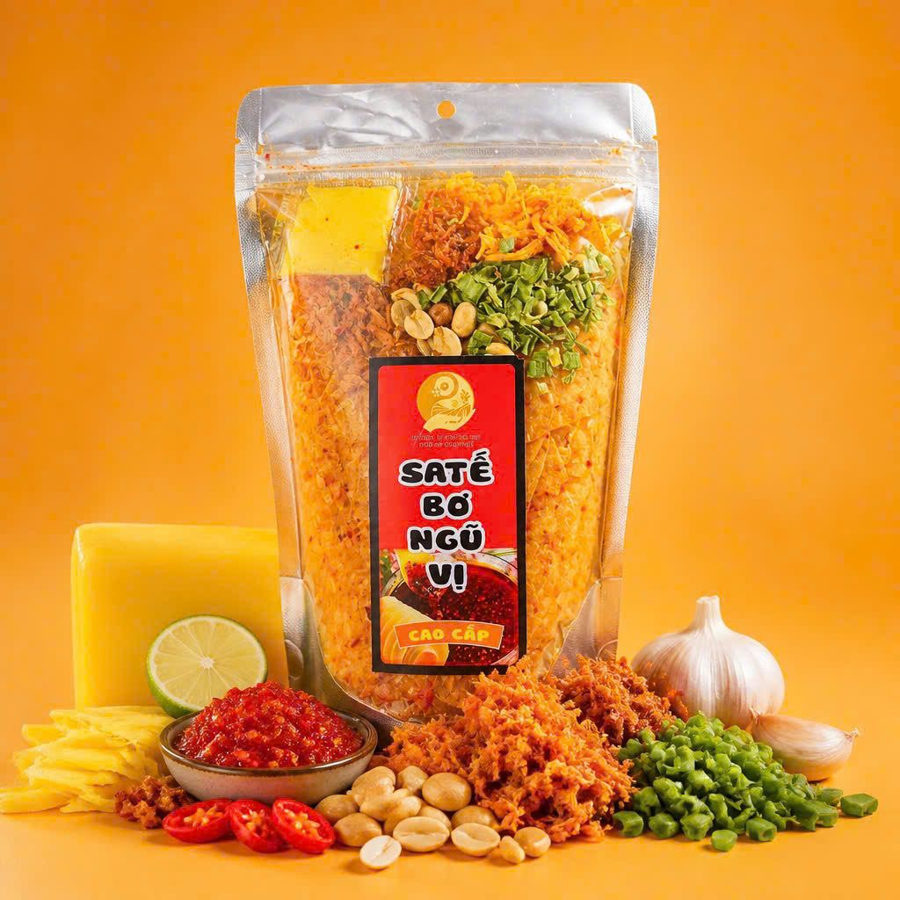
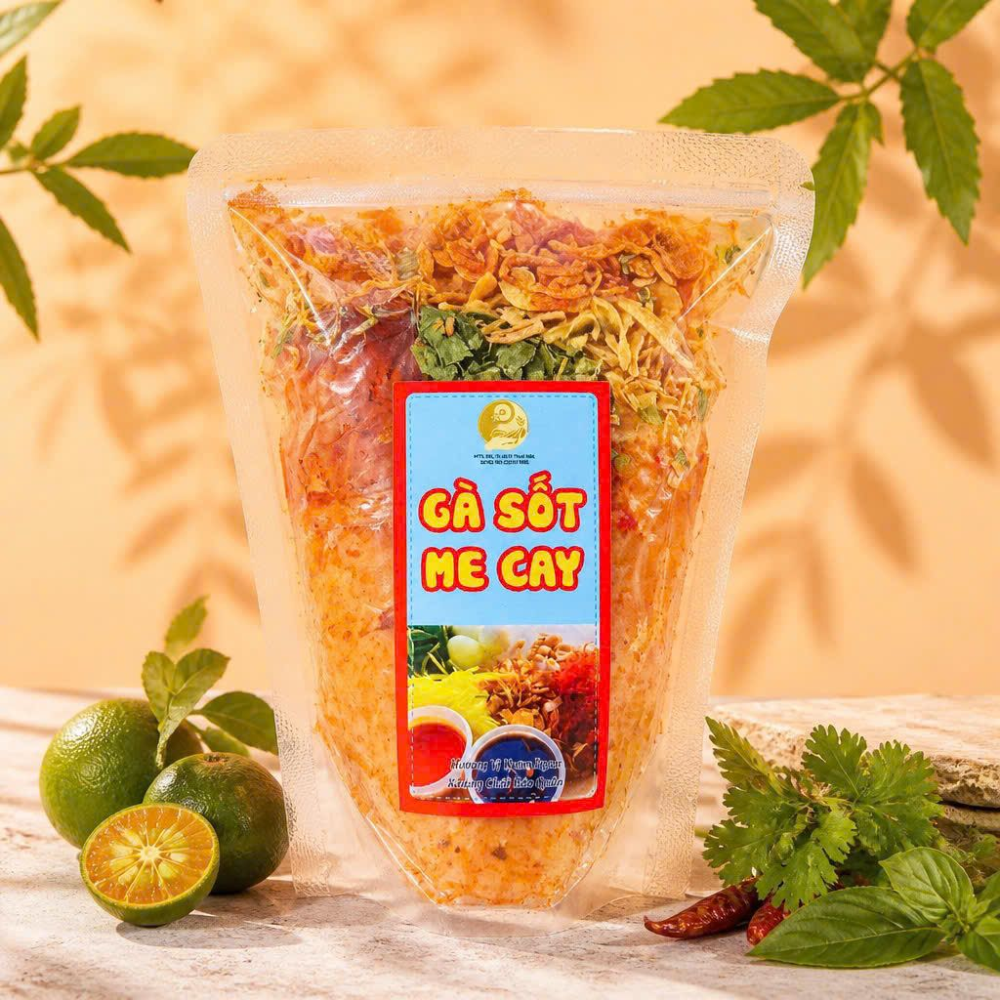
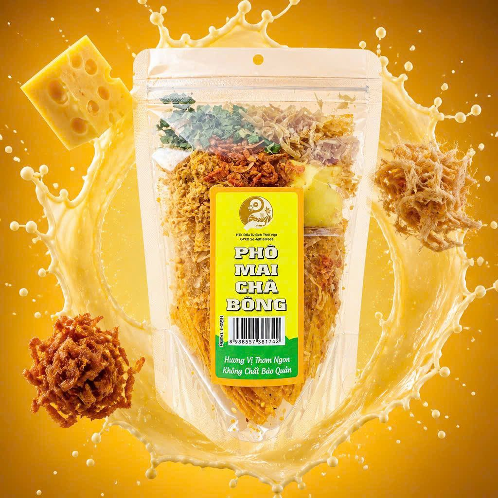
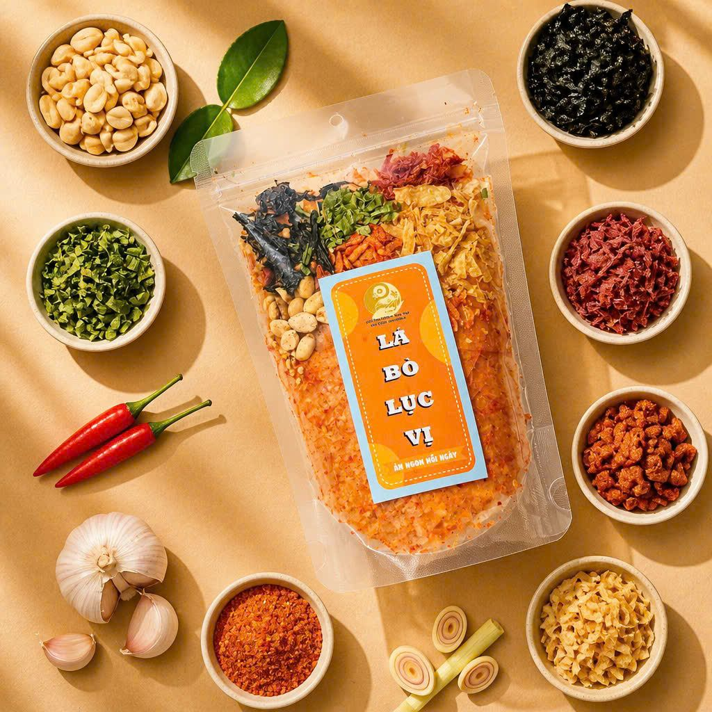
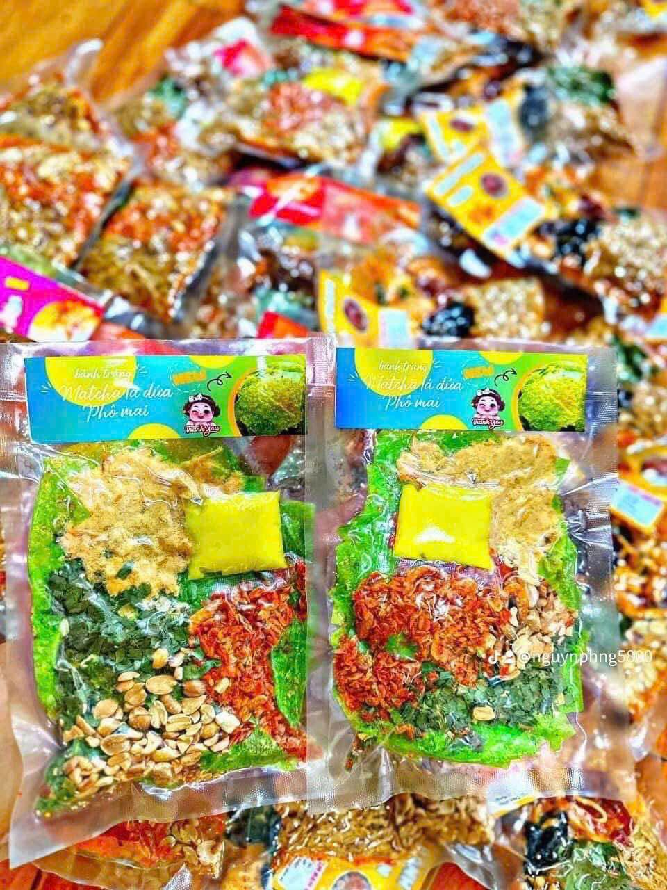

Hợp tác xã Đầu tư Sinh Thái Việt · Thái Nguyên
Bánh tráng trộn & đặc sản ăn vặt đạt chuẩn ISO 22000
Từ tấm bánh tráng đến hũ, túi, set ăn vặt hoàn chỉnh. Sản xuất và đóng gói theo hệ thống an toàn thực phẩm ISO 22000:2018, phục vụ khách lẻ, đại lý và quán ăn vặt trên toàn quốc.
Xem sản phẩmLàm đại lý / mua sỉ
- ISO 22000:2018
- 97+ sản phẩm
- 62+ nguyên liệu sỉ

Vì sao chọn Sinh Thái Việt?
Quản lý an toàn thực phẩm
Chứng nhận ISO 22000:2018 số W2386F do WCERT cấp, hiệu lực 11/7/2025 – 10/7/2028, phạm vi sản xuất, đóng gói, kinh doanh sản phẩm từ bánh tráng.
Danh mục đầy đủ
Bánh tráng trộn, phơi sương, dẻo tôm, cơm cháy, khô bò – gà – mực, sốt và topping. Bán lẻ, bán sỉ và cung cấp nguyên liệu.
Chính sách đại lý rõ ràng
Ba mức giá: đại lý chiến lược, đại lý và giá sỉ từ 30 gói, kèm giá bán lẻ khuyến nghị để dễ lên kế hoạch kinh doanh.
Sản phẩm được yêu thích
Một số vị bánh tráng trộn đóng túi zip, hút chân không, đủ topping.




Câu chuyện thương hiệu
Biểu tượng Sinh Thái Việt là bàn tay nâng đỡ cánh đồng và mầm cây, gắn với đồng tiền và nhịp sống hiện đại. Đó cũng là cách chúng tôi làm nghề: tôn trọng nguyên liệu, nâng niu người làm ra, đầu tư dài hạn vào chất lượng.
Cung cấp nguyên liệu cho quán ăn vặt
Vỏ bánh tráng, sốt me – tắc – bò – ớt, khô bò, khô gà, mực cán, hành phi, tóp mỡ, bơ... đóng can, thùng hoặc theo kg. Có sẵn combo trộn, cuộn, nướng để mở quán nhanh.